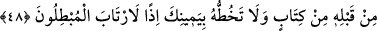

ZİKİR İBÂDETLERİN
EN BÜYÜĞÜDÜR
45. (Resûlüm!) Sana vahyedilen Kitab’ı oku ve namazı kıl. Muhakkak ki, namaz,
hayâsızlıktan ve kötülükten alıkoyar. Allah’ı anmak elbette (ibâdetlerin) en
büyüğüdür. Allah yaptıklarınızı bilir.
46. İçlerinden zulmedenleri bir yana, ehl-i kitapla ancak en güzel yoldan
mücâdele edin ve deyin ki: Bize indirilene de, size indirilene de îman ettik. Bizim
Tanrımız da sizin Tanrınız da birdir ve biz O’na teslim olmuşuzdur.
47. (Resûlüm!) İşte böylece sana (önceki kitapları tasdik eden) bu Kitab’ı
indirdik. Onun için, kendilerine kitap verdiklerimiz ona îman ediyorlar. Şunlardan
(Araplardan) da ona îman eden nice kimseler vardır. Âyetlerimizi, ancak kâfirler
(inatları yüzünden) bile bile inkâr eder.
48. Sen bundan önce ne bir yazı okur, ne de elinle onu yazardın. Öyle olsaydı,
bâtıla uyanlar kuşku duyarlardı.
49. Hayır, o (Kur’an), kendilerine ilim verilenlerin sînelerinde (yer eden) apaçık
âyetlerdir. Âyetlerimizi, ancak zâlimler bile bile inkâr eder.